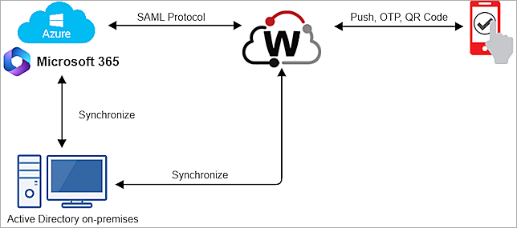

This document describes how to set up multi-factor authentication (MFA) for Microsoft 365 with AuthPoint as an identity provider. Microsoft 365 must already be configured and deployed before you set up MFA with AuthPoint.
After you configure MFA for Microsoft 365, we recommend that new AuthPoint users navigate to the IdP portal to activate their token.
Due to a Microsoft limitation, Microsoft 365 supports AuthPoint MFA for Microsoft Entra ID users only if they are synced with an on-premise AD server. When you import users to AuthPoint, you must sync the users from an on-prem AD. Microsoft 365 does not support MFA for users that only exist in Microsoft Entra ID (formerly Azure AD). For more information, go to Can Azure AD AuthPoint Users Use Office 365 and FAQ for AuthPoint and Microsoft Azure Active Directory.
For information about the URLs and IP ranges that AuthPoint services use, go to WatchGuard Cloud URLs and Network Access Requirements.
To undo the changes made to your domain after you complete the steps in this procedure, go to the Rollback Instructions section at the end of this integration guide.
If you use Microsoft Office desktop applications (such as Outlook, Teams, and Word) on any device that runs Windows 10, make sure your operating system is updated to version 20H2 or higher. AuthPoint MFA does not support MFA for web applications on Windows 8.1.
Contents
Microsoft 365 Authentication Data Flow with AuthPoint
AuthPoint communicates with various cloud-based services and service providers with the SAML protocol. This diagram shows the data flow of an MFA transaction for Microsoft 365.

Before You Begin
Before you begin these procedures, make sure that:
- You install and configure the AuthPoint Gateway (see About Gateways).
- End-users can log in to Microsoft 365.
- A token is assigned to a user in AuthPoint (to test MFA).
- You have an AuthPoint identity provider (IdP) certificate (go to Certificate Management).
- To use Microsoft Graph PowerShell, you must have PowerShell v5.1 or higher.
Configure AuthPoint
Before AuthPoint can receive authentication requests from Microsoft 365, you must specify the Microsoft 365 client as a resource in AuthPoint. You must also create an authentication policy for the Microsoft 365 resource to determine which users can authenticate and log in to Microsoft 365 and which authentication methods they can use (Push, QR code, and OTP).
To configure AuthPoint:
- Add a SAML Resource in AuthPoint.
- Add a Group in AuthPoint.
- Add an Authentication Policy to AuthPoint.
Add a SAML Resource in AuthPoint
If you have multiple Microsoft 365 domains, you only need to configure a SAML resource for your primary domain.
From the AuthPoint management UI:
- From the navigation menu, select Resources.
Click Add Resource.
The Add Resource page opens.

- From the Type drop-down list, select SAML.
Additional fields appear.

- On the SAML page, in the Name text box, type a name for this resource.
- From the Application Type drop-down list, select Office 365.
- In the Service Provider Entity ID text box, type urn:federation:MicrosoftOnline.
- In the Assertion Consumer Service text box, type https://login.microsoftonline.com/login.srf.
- From the Signature Method drop-down list, select SHA-256.
- In the Federated Domain text box, type your federated domain.
- From the AuthPoint Certificate drop-down list, select the AuthPoint certificate to associate with your resource. We recommend that you select the certificate with the latest expiration date.
- Click Save.
Add a Group in AuthPoint
You must have at least one user group in AuthPoint to configure MFA. If you already have a group, you do not have to add another group.
To add a WatchGuard Cloud-hosted group to the WatchGuard Cloud Directory:
- Go to Configure > Directories and Domain Services.
- Click the WatchGuard Cloud Directory domain name. If you have not yet added the WatchGuard Cloud Directory, click Add Authentication Domain and select the WatchGuard Cloud Directory.
The New Group page appears.

- In the Groups tab, click Add Group.
- In the Group Name text box, type a descriptive name for the group.
- (Optional) In the Description text box, type a description of the group.

- Click Save.
Your group is added to the WatchGuard Cloud Directory and to AuthPoint.
Add an Authentication Policy to AuthPoint
Authentication policies specify which resources users can authenticate to and which authentication methods they can use (Push, QR code, and OTP).
You must have at least one authentication policy in AuthPoint that includes the Microsoft 365 resource. If you already have authentication policies, you do not have to create a new authentication policy. You can add this resource to your existing authentication policies.
Users that do not have an authentication policy for a specific resource cannot authenticate to log in to that resource.
To configure an authentication policy:
- From the navigation menu, select Authentication Policies.
- Click Add Policy.

- Type a name for this policy.
- From the Select the Authentication Options drop-down list, select Authentication Options and select which authentication options users can choose from when they authenticate.
For SAML resources, if you select more than one authentication option, users must select one of the available options when they authenticate. For example, if you select OTP and Push, users can choose to type their OTP or approve a push to authenticate. You cannot require that they do both.

- Select which groups this policy applies to. You can select more than one group. To configure this policy to apply to all groups, select All Groups.
- Select the resource that you created in the previous section. If you want this policy to apply to additional resources, select each resource this policy applies to. To configure this policy to apply to all resources, select All Resources.

-
(Optional) If you have configured policy objects such as a Network Location, select which policy objects apply to this policy. When you add a policy object to a policy, the policy only applies to user authentications that are the same as the conditions of the policy objects. For example, if you add a Network Location to a policy, the policy only applies to user authentications that come from that Network Location. Users who only have a policy that includes a Network Location do not get access to the resource when they authenticate outside of that Network Location (because they do not have a policy that applies, not because authentication is denied).
If you configure policy objects, we recommend that you create a second policy for the same groups and resources without the policy objects. The policy with the policy objects should have a higher priority.

- Click Save.
Your policy is created and added to the end of the policy list.When you create a new policy, we recommend that you review the order of your policies. AuthPoint always adds new policies to the end of the policy list.

Configure Microsoft 365
Before you configure Microsoft 365, you must download the metadata file from the Certificate Management page in the AuthPoint management UI. For information about how to download the metadata file, go to Certificate Management.
To configure Microsoft 365:
- Log in to WatchGuard Cloud.
- From the navigation menu, select Configure > AuthPoint. If you have a Service Provider account, you must select an account from Account Manager.
- Select Resources.
The Resources page opens.
- Click Certificate.
The Certificate page opens.

- Next to the AuthPoint certificate you associated with your resource in the previous section, click
 , then select Download Metadata.
, then select Download Metadata.
The AuthPoint metadata provides your resource, in this case Microsoft 365, with the necessary information to identify AuthPoint as a trusted identity provider. If you do not have a certificate, or if all of your certificates have expired, click Add Certificate and use the new certificate. - To set up your environment for identity federation, follow the steps in Connect with Microsoft Graph PowerShell. You must sync your on-premise AD users to Microsoft Entra ID (formerly Azure AD).
- Launch the Microsoft Graph PowerShell you configured in step 6, then type Connect-MgGraph -Scopes "Domain.ReadWrite.All","Directory.AccessAsUser.All" to log in with your Microsoft 365 global administrator credentials.
You cannot federate the default domain and initial domain in Microsoft 365. You must register another domain with Microsoft 365 or connect an existing domain to the Microsoft 365 service. For more information, go to the Microsoft documentation. You can then use the configured domain when you configure AuthPoint.
- To verify the status of domains, type Get-MgDomain -DomainId yourmicrosoft365domain. Your domain must be verified and have a status of Managed. If your domain is already federated, before you continue, change the status of your domain from Federated to Managed. To change the status, follow the steps in the Rollback Instructions section.
If your domain is federated, to return your federation settings, we recommend that you run this command:
$saml = Get-MgDomainFederationConfiguration -DomainId <domain_name>.
This information is necessary if you want to undo the changes you made to your domain.Before you federate your Microsoft 365 domain, make sure that you have enabled modern authentication for Outlook in Exchange Online. For more information, go to this Knowledge Base - Article.
- Set these federation parameters as PowerShell variables:
- $Domain = "your_Microsoft_365_domain" (This parameter matches the federated domain in the previous section)
- $LogOnUrl = "https://sp.authpoint.your WatchGuard Cloud region.cloud.watchguard.com/saml/your account ID/sso/spinit" (This URL appears in your AuthPoint metadata file, labeled as SingleSignOnService)
- $LogOffUrl = "https://sp.authpoint.your WatchGuard Cloud region.cloud.watchguard.com/saml/your account ID/slo/spinit" (This parameter appears in your AuthPoint metadata file, labeled as SingleLogoutService)
- $MyUri = "https://sp.authpoint.cloud.watchguard.com/your account ID" (This URL appears in your AuthPoint metadata file, labeled as entityID)
- $Protocol = "saml"
- $MySigningCert = "the X.509 certificate in string format" (This value appears in your AuthPoint metadata file, labeled as X509Certificate, with no spaces)
For more information about how to format the X.509 value as a string, go to https://www.samltool.com/format_x509cert.php.
To federate more than one domain with AuthPoint, for each additional domain, you must repeat each of the above parameters and append ?your_Microsoft_365_domain_name at the end of the $MyUri parameter. Do not append anything to the first domain that you federate, or the federation will not work.
- To convert the Microsoft 365 domain to Federated, run this PowerShell command:
New-MgDomainFederationConfiguration -DomainId $Domain -PassiveSignInUri $LogOnUrl -SignOutUri $LogOffUrl -IssuerUri $MyUri -PreferredAuthenticationProtocol $Protocol -SigningCertificate $MySigningCert -FederatedIdpMfaBehavior "enforceMfaByFederatedIdp" | Format-List.
- To verify that your domain is Federated, run this PowerShell command:
Get-MgDomain -DomainId yourmicrosoft365domain
To configure Skype for Business:
- Install the Microsoft Teams PowerShell module.
- Run PowerShell as an administrator.
- Run these commands:
- Import-Module MicrosoftTeams
- $userCredential = Get-Credential
You must use this command with a Microsoft 365 administrator account on a domain that is not federated — usually the default Microsoft 365 domain (<domain>.onmicrosoft.com).
- Connect-MicrosoftTeams -Credential $userCredential
The process to configure Skype for Business might take two hours to complete.
Synchronize Users from Your Active Directory
You must sync your on-premise AD users (that you synced to Microsoft Entra ID earlier) to AuthPoint so that the users have the same attributes and both Microsoft 365 and AuthPoint can recognize them.
To sync users from Active Directory to AuthPoint, you must add an external identity in AuthPoint. External identities connect to user databases to get user account information and validate passwords. For more information, go to Sync Users from Active Directory or LDAP.
You must install and configure a Gateway before you configure ADFS or sync users from your LDAP database. For more information, go to About Gateways.
Test the Integration
To test the integration of AuthPoint and Microsoft 365, you can authenticate with a mobile token on your mobile device. You can choose any method (one-time password, QR code, or push).
In this example, we test the integration with the push authentication method (users receive a push notification in the mobile app that they must approve to authenticate).
- In a web browser, connect to Microsoft 365.
- In the Sign In text box, type your email address.
- Click Next.
- Type your email address or AuthPoint user name, then click Next.
- If required, in the Password text box, type your password.
- For the authentication method, select Send Push.
- Approve the authentication request you receive on your mobile device.
You are logged in to Microsoft 365.
Rollback Instructions
This section describes the steps to undo the changes you made to your domain. If you want to do this, you change the status of your domain from Federated to Managed and reconfigure the settings from a previously federated domain.
Microsoft 365 does not support multiple federations on a single domain. Before you begin, confirm the status of your domain in Microsoft 365.
To change the status of your domain from Federated to Managed:
- Run PowerShell, then type Connect-MgGraph -Scopes "Domain.ReadWrite.All","Directory.AccessAsUser.All".
- Log in with your Microsoft 365 global administrator credentials.
Wait for the connection to establish. This might take several minutes. - To verify your domain status, type Get-MgDomain -DomainId yourmicrosoft365domain.
- To get your InternalDomainFederationId, type Get-MgDomainFederationConfiguration -DomainId yourmicrosoft365domain.
You get the InternalDomainFederationId from the value of the yourInternalDomainFederationId parameter in the output. If you have federated your domain with the old MSOnline module, you can also get yourInternalDomainFederationId with this command. - To modify the status, type Remove-MgDomainFederationConfiguration -DomainId yourmicrosoft365domain -InternalDomainFederationId yourInternalDomainFederationId.
- To verify the status of your domain is Managed, type Get-MgDomain -DomainId yourmicrosoft365domain.
To restore the settings for a federated domain:
To restore the settings for your previously federated domain, you must have run the command $saml = Get-MgDomainFederationConfiguration -DomainId <domain_name> in the Configure Microsoft 365 section.
- To log in with your Microsoft 365 global administrator credentials, run PowerShell, then type Connect-MgGraph -Scopes "Domain.ReadWrite.All","Directory.AccessAsUser.All".
- To verify your domain status, type Get-MgDomain -DomainId yourmicrosoft365domain.
- Type New-MgDomainFederationConfiguration -DomainId <domain_name> -FederatedIdpMfaBehavior $saml.FederatedIdpMfaBehavior -IssuerUri $saml.IssuerUri -PassiveSignInUri $saml.PassiveSignInUri -PreferredAuthenticationProtocol $saml.PreferredAuthenticationProtocol -SignOutUri $saml.SignOutUri -SigningCertificate $saml.SigningCertificate.